Code
sr <- c(1.5, -1.5, 4, 3)
z <- sum(sr) / sqrt(sum(sr ^ 2))
pval <- 2 * (1 - pnorm(abs(z)))
c(z=z, pval=pval) z pval
1.2888045 0.1974661 

1 The large-sample efficiency of the Wilcoxon and Spearman tests compared to \(t\) and \(r\) tests is \(\frac{3}{\pi} = 0.9549\).
| Group 1 | Group 2 | Means | \(P\) |
|---|---|---|---|
| 1 2 3 4 5 6 7 8 9 10 | 7 8 9 10 11 12 13 14 15 16 17 18 19 20 | 5.5 and 13.5 | 0.000019 |
| 1 2 3 4 5 6 7 8 9 10 | 7 8 9 10 11 12 13 14 15 16 17 18 19 20 200 | 5.5 and 25.9 | 0.12 |
The SD is a particularly non-robust statistical estimator.
E.g., a CL for the difference in 2 means may include zero whereas the Wilcoxon test yields \(P=0.01\)
Point estimate that exactly corresponds to the Wilcoxon two-sample test is the Hodges-Lehman estimate of the location difference
| Parametric Test | Nonparametric Counterpart | Semiparametric Model Counterpart |
|---|---|---|
| 1-sample \(t\) | Wilcoxon signed-rank | |
| 2-sample \(t\) | Wilcoxon 2-sample rank-sum | Proportional odds |
| \(k\)-sample ANOVA | Kruskal-Wallis | Proportional odds |
| Pearson \(r\) | Spearman \(\rho\) |
| A | B | B-A | Rank \(|\mathrm{B-A}|\) | Signed Rank |
|---|---|---|---|---|
| 5 | 6 | 1 | 1.5 | 1.5 |
| 6 | 5 | -1 | 1.5 | -1.5 |
| 4 | 9 | 5 | 4.0 | 4.0 |
| 7 | 9 | 2 | 3.0 | 3.0 |
sr <- c(1.5, -1.5, 4, 3)
z <- sum(sr) / sqrt(sum(sr ^ 2))
pval <- 2 * (1 - pnorm(abs(z)))
c(z=z, pval=pval) z pval
1.2888045 0.1974661 | Subject | Drug 1 | Drug 2 | Diff (2-1) | Sign | Rank | RD |
|---|---|---|---|---|---|---|
| 1 | 0.7 | 1.9 | 1.2 | + | 3 | 5 |
| 2 | -1.6 | 0.8 | 2.4 | + | 8 | 8.5 |
| 3 | -0.2 | 1.1 | 1.3 | + | 4.5 | 8 |
| 4 | -1.2 | 0.1 | 1.3 | + | 4.5 | 5 |
| 5 | -0.1 | -0.1 | 0.0 | NA | 0 | |
| 6 | 3.4 | 4.4 | 1.0 | + | 2 | 2.5 |
| 7 | 3.7 | 5.5 | 1.8 | + | 7 | 3 |
| 8 | 0.8 | 1.6 | 0.8 | + | 1 | 2.5 |
| 9 | 0.0 | 4.6 | 4.6 | + | 9 | 13.0 |
| 10 | 2.0 | 3.4 | 1.4 | + | 6 | 1.5 |
drug1 <- c(.7, -1.6, -.2, -1.2, -.1, 3.4, 3.7, .8, 0, 2)
drug2 <- c(1.9, .8, 1.1, .1, -.1, 4.4, 5.5, 1.6, 4.6, 3.4)
wilcox.test(drug2, drug1, paired=TRUE)
Wilcoxon signed rank exact test
data: drug2 and drug1
V = 54, p-value = 0.003906
alternative hypothesis: true location shift is not equal to 0wilcox.test(drug2 - drug1)
Wilcoxon signed rank exact test
data: drug2 - drug1
V = 54, p-value = 0.003906
alternative hypothesis: true location is not equal to 0wilcox.test(drug2 - drug1, correct=FALSE)
Wilcoxon signed rank exact test
data: drug2 - drug1
V = 54, p-value = 0.003906
alternative hypothesis: true location is not equal to 0sr <- c(3, 8, 4.5, 4.5, 0, 2, 7, 1, 9, 6)
z <- sum(sr) / sqrt(sum(sr ^ 2))
c(z=z, pval=2 * (1 - pnorm(abs(z)))) z pval
2.667911250 0.007632442 d <- data.frame(Drug=c(rep('Drug 1', 10), rep('Drug 2', 10),
rep('Difference', 10)),
extra=c(drug1, drug2, drug2 - drug1))2 * (1 / 2) ^ 9 # 2 * to make it two-tailed[1] 0.00390625Test whether the continuity correction makes \(P\)-values closer to the exact calculation2
2 The exact \(P\)-value is available only when there are no ties.}, and compare to our simple formula.
# Assume we are already starting with signed ranks as x
wsr <- function(x, ...) wilcox.test(x, ...)$p.value
sim <- function(x) {
z <- sum(x) / sqrt(sum(x ^ 2))
2 * (1 - pnorm(abs(z))) }
alls <- function(x) round(c(
continuity=wsr(x, correct=TRUE, exact=FALSE),
nocontinuity=wsr(x, correct=FALSE, exact=FALSE),
exact=wsr(x, exact=TRUE),
simple=sim(x)), 4)
alls(1:4) continuity nocontinuity exact simple
0.1003 0.0679 0.1250 0.0679 alls(c(-1, 2 : 4)) continuity nocontinuity exact simple
0.2012 0.1441 0.2500 0.1441 alls(c(-2, c(1, 3, 4))) continuity nocontinuity exact simple
0.3613 0.2733 0.3750 0.2733 alls(c(-1, -2, 3 : 5)) continuity nocontinuity exact simple
0.2807 0.2249 0.3125 0.2249 alls(c(-5, -1, 2, 3, 4, 6)) continuity nocontinuity exact simple
0.4017 0.3454 0.4375 0.3454 From these examples the guidance is to:
wilcox.test) unlike the recommendation for the Pearson \(\chi^2\) testUnlike the Wilcoxon two-sample comparison, the Wilcoxon signed-rank test has a significant disadvantage in depending on how the response varible is transformed. The rank difference test of Kornbrot (1990)3 solves this problem. Kornbrot’s procedure is as follows
3 Also available here
The test is implemented in the R rankdifferencetest package by Brett Klamer4 but the essence of the calculation is below where we run the rank difference test on the data analyzed previously. The rank differences RD are shown in the data table there.
4 The rankdifferencetest package will provide exact p-values in case of ties.
m <- length(drug1)
ranks <- rank(c(drug1, drug2))
rank.diffs <- ranks[-(1 : m)] - ranks[1 : m]
wilcox.test(rank.diffs)
Wilcoxon signed rank exact test
data: rank.diffs
V = 54, p-value = 0.003906
alternative hypothesis: true location is not equal to 0The results were identical to the signed-rank test because every subject had a higher drug 2 response than their drug 1 response except for the one that was tied which is excluded from both analyses.
| Females | 120 | 118 | 121 | 119 |
| Males | 124 | 120 | 133 | |
| Ranks for Females | 3.5 | 1 | 5 | 2 |
| Ranks for Males | 6 | 3.5 | 7 |
Doing a 2-sample \(t\)-test using these ranks as if they were raw data and computing the \(P\)-value against 4+3-2=5 d.f. will work quite well
Some statistical packages compute \(P\)-values exactly (especially if there are no ties)
Loosely speaking the WMW test tests whether the population medians of the two groups are the same
More accurately and more generally, it tests whether observations in one population tend to be larger than observations in the other
Letting \(x_1\) and \(x_2\) respectively be randomly chosen observations from populations one and two, WMW tests \(H_{0}:c=\frac{1}{2}\), where \(c=\)Prob\([x_{1} > x_{2}]\)
The \(c\) index (concordance probability) may be estimated by computing \[c = \frac{\bar{R}-\frac{n_{1}+1}{2}}{n_{2}},\] where \(\bar{R}\) is the mean of the ranks in group 1;
For the above data \(\bar{R} = 2.875\) and \(c=\frac{2.875-2.5}{3}=0.125\), so we estimate that the probability is 0.125 that a randomly chosen female has a value greater than a randomly chosen male.
In diagnostic studies where \(x\) is the continuous result of a medical test and the grouping variable is diseased vs. non-diseased, \(c\) is the area under the receiver operating characteristic (ROC) curve
Test still has the “probability of ordering” interpretation when the variances of the two samples are markedly different, but it no longer tests anything like the difference in population medians If there is no overlap between measurements from group 1 and those from group 2, the exact 2-sided \(P\)-value for the Wilcoxon test is \(2/ \frac{n!}{n_{1}! n_{2}!}\). If \(n_{1}=n_{2}\), \(n_{1}\) must be \(\geq 4\) to obtain \(P < 0.05\) (in this case \(P = 0.029\)).
#Fecal Calprotectin: 2500 is above detection limit
calpro <- c(2500, 244, 2500, 726, 86, 2500, 61, 392, 2500, 114, 1226,
2500, 168, 910, 627, 2500, 781, 57, 483, 30, 925, 1027,
2500, 2500, 38, 18)
# Endoscopy score: 1 = No/Mild, 2=Mod/Severe Disease
# Would have been far better to code dose as 4 ordinal levels
endo <- c(2, 1, 2, 2, 2, 1, 1, 2, 2, 1, 2, 2, 1, 2, 2, 2, 2, 1, 2,
2, 2, 2, 2, 2, 1, 1)
endo <- factor(endo, 1 : 2,
c("No or Mild Activity", "Moderate or Severe Activity"))
require(ggplot2)
ggplot(data.frame(endo, calpro), aes(y=calpro, x=endo)) +
geom_boxplot(color='lightblue', alpha=.85, width=.4) +
geom_dotplot(binaxis='y', stackdir='center', position='dodge') +
xlab('') + ylab('Fecal Calprotectin') + coord_flip() +
geom_hline(aes(yintercept=2500, col=I('red')), linetype='dotted')
wilcox.test(calpro ~ endo)
Wilcoxon rank sum exact test
data: calpro by endo
W = 23.5, p-value = 0.005044
alternative hypothesis: true location shift is not equal to 0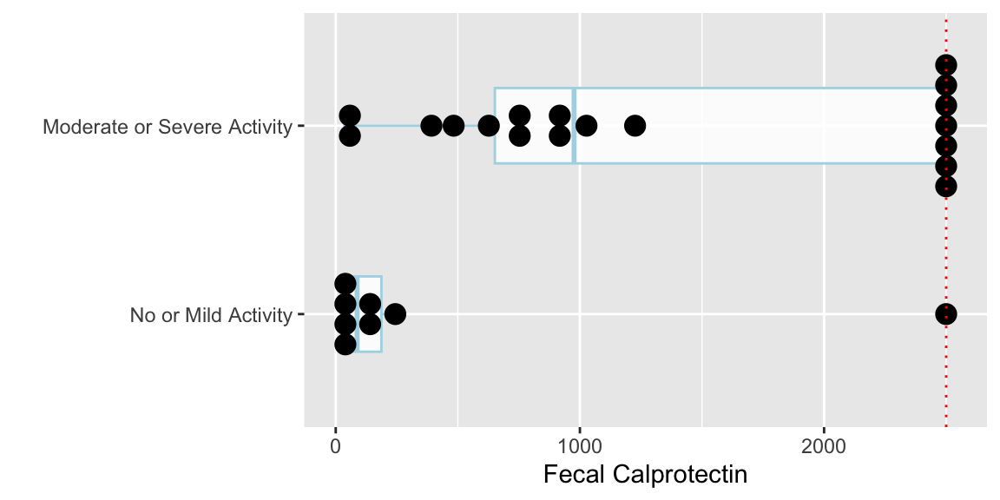
The following plots the ranks that are used in the Wilcoxon-Mann-Whitney two-sample rank sum test.
ggplot(data.frame(endo, calpro), aes(y=rank(calpro), x=endo)) +
geom_dotplot(binaxis='y', stackdir='center', position='dodge') +
xlab('') + ylab('Rank of Fecal Calprotectin') + coord_flip()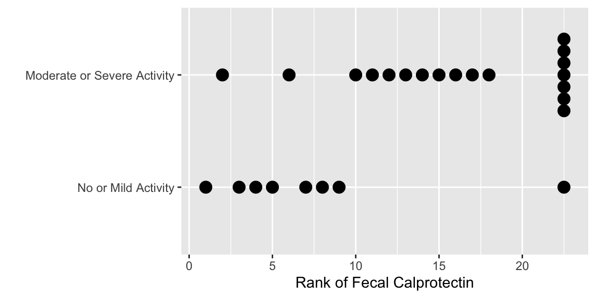
R somers2 function shows how the concordance probability is computed from the mean of the ranks in one of the two groups.require(Hmisc)
# Convert endo to a binary variable
somers2(calpro, endo=='Moderate or Severe Activity') C Dxy n Missing
0.8368056 0.6736111 26.0000000 0.0000000 If you type somers2 to list the code for the function you will see that the \(c\)-index is tightly related to the Wilcoxon test when you see this code:
mean.rank <- mean(rank(x)[y == 1])
c.index <- (mean.rank - (n1 + 1)/2) / (n - n1)As mentioned earlier, the effect estimate that is exactly consistent with the Wilcoxon two-sample test is the robust Hodges-Lehman estimator—the median of all possible differences between a measurement from group 1 and a measurement from group 2. There is a confidence interval for this estimator.
| Female \(\rightarrow\) | ||||
|---|---|---|---|---|
| Male \(\downarrow\) | 120 | 118 | 121 | 119 |
| 124 | 4 | 6 | 3 | 5 |
| 120 | 0 | 2 | -1 | 1 |
| 133 | 13 | 15 | 12 | 14 |
female <- c(120, 118, 121, 119)
male <- c(124, 120, 133)
differences <- outer(male, female, '-')
differences [,1] [,2] [,3] [,4]
[1,] 4 6 3 5
[2,] 0 2 -1 1
[3,] 13 15 12 14median(differences)[1] 4.5# Can't figure out how difference in location is computed below
# It's not the Hodges-Lehman estimate
wilcox.test(male, female, conf.int=TRUE)
Wilcoxon rank sum exact test
data: male and female
W = 10.5, p-value = 0.1714
alternative hypothesis: true location shift is not equal to 0
100 percent confidence interval:
-Inf Inf
sample estimates:
difference in location
4.5 In general, \(1 - \alpha\) confidence intervals are the set of values that if hypothesized to be the true location parameter would not be rejected at the \(\alpha\) level. wilcox.test computes the location shift by solving for the hypothesized value that yields \(P=1.0\) instead of the more proper median of all differences. Look into this further by plotting the \(P\)-value as a function of the hypothesized value.
dif <- seq(-3, 15, by=.1)
n <- length(dif)
pval <- numeric(n)
for(i in 1 : n) pval[i] <- wilcox.test(male - dif[i], female)$p.value
ggplot(data.frame(dif, pval), aes(x=dif, y=pval)) +
geom_step() +
geom_hline(yintercept=.05, col='red', linetype='dotted') +
geom_vline(xintercept=c(4.5, 4.791, -1, 15), col='red', linetype='dotted') +
xlab('Difference') + ylab('P-value')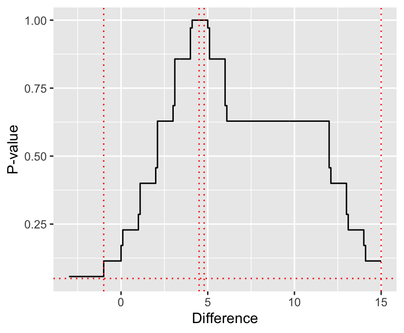
wilcox.test, the median difference, the Hodges-Lehman estimator as computed by wilcox.test, and the upper 0.95 confidence limit from wilcox.test.
See Section 7.4 for a more approximate confidence interval.
# Exact CI for median from DescTools package SignTest.default
# See also ttp://www.stat.umn.edu/geyer/old03/5102/notes/rank.pdf,
# http://de.scribd.com/doc/75941305/Confidence-Interval-for-Median-Based-on-Sign-Test
cimed <- function(x, alpha=0.05, na.rm=FALSE) {
if(na.rm) x <- x[! is.na(x)]
n <- length(x)
k <- qbinom(p=alpha / 2, size=n, prob=0.5, lower.tail=TRUE)
## Actual CL: 1 - 2 * pbinom(k - 1, size=n, prob=0.5) >= 1 - alpha
sort(x)[c(k, n - k + 1)]
}
cimed(1 : 100)[1] 40 61For \(n=100\) we see that the approximate interval happened to be exact.
wilcox.test).diffs <- numeric(1000)
set.seed(13)
for(i in 1 : 1000) diffs[i] <-
median(sample(male, replace=TRUE)) - median(sample(female, replace=TRUE))
ggplot(data.frame(diffs), aes(x=diffs)) + xlab('Differences in Medians') +
geom_histogram(bin_widith=.01, color='blue', fill='white')
quantile(diffs, c(0.025, 0.975)) 2.5% 97.5%
-0.5 14.5 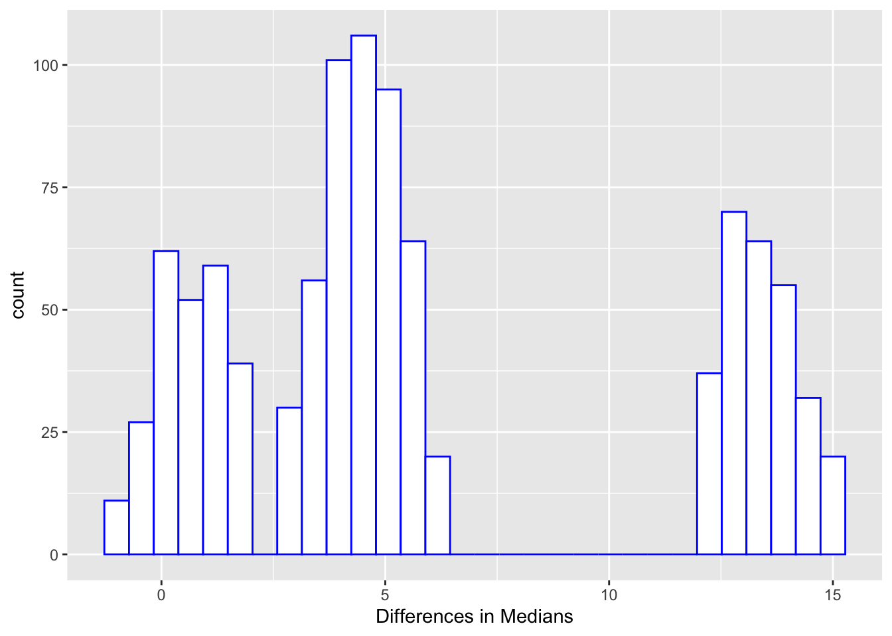
But recall that the Wilcoxon test does not really test the difference in medians but rather the median of all differences.
5 A good nonparametric confidence for a population mean that does not even assume a symmetric distribution can be obtained from the bootstrap simulation procedure.


R rms package orm function fits the PO model7 and is especially made for continuous \(Y\), with fast run times for up to 6000 intercepts6 When using the Kruskal-Wallis test followed by pairwise Wilcoxon tests, these pairwise tests can be inconsistent with each other, because they re-rank the data based only on two groups, destroying the transitivity property, e.g. treatment A can be better than B which is better than C but C is better than A.
7 orm also fits other models using link functions other than the logit.
8 The predicted mean for a set of covariate settings is obtained by using all the intercepts and \(\beta\)s to get exceedance probabilities for \(Y \geq y\), taking successive differences in those probabilities to get cell probabilities that \(Y=y\), then multiplying cell probabilities by the \(y\) value attached to them, and summing. This is the formula for the mean for a discrete distribution.
set.seed(1)
group <- rep(c('A','B','C','D'), 100)
y <- rnorm(400, 100, 15) + 10*(group == 'B') + 20*(group=='C') + 30*(group=='D')
require(rms)
options(prType='html')
dd <- datadist(group, y); options(datadist='dd')
f <- orm(y ~ group)
f # use LR chi-square test as replacement for Kruskal-WallisLogistic (Proportional Odds) Ordinal Regression Model
orm(formula = y ~ group)
| Model Likelihood Ratio Test |
Discrimination Indexes |
Rank Discrim. Indexes |
|
|---|---|---|---|
| Obs400 | LR χ2193.31 | R20.383 | ρ0.633 |
| ESS400 | d.f.3 | R23,4000.379 | Dxy0.426 |
| Distinct Y400 | P(>χ2)<0.0001 | R23,4000.379 | |
| Y0.5115.4143 | Score χ2193.21 | |P(Y ≥ median)-½|0.256 | |
| max |∂log L/∂β|3×10-12 | P(>χ2)<0.0001 |
| β | S.E. | Wald Z | P(>|Z|) | |
|---|---|---|---|---|
| group=B | 1.4221 | 0.2579 | 5.51 | <0.0001 |
| group=C | 2.6624 | 0.2762 | 9.64 | <0.0001 |
| group=D | 3.6606 | 0.2925 | 12.52 | <0.0001 |
# Derive R function to use all intercepts and betas to compute predicted means
M <- Mean(f)
Predict(f, group, fun=M) group yhat lower upper
1 A 99.32328 96.46657 102.1800
2 B 111.21326 108.27169 114.1548
3 C 121.63880 118.78670 124.4909
4 D 129.70290 127.07203 132.3338
Response variable (y):
Limits are 0.95 confidence limits# Compare with sample means
summarize(y, group, smean.cl.normal) group y Lower Upper
1 A 98.72953 95.81508 101.6440
2 B 111.69464 108.61130 114.7780
3 C 121.80841 118.93036 124.6865
4 D 130.05275 127.40318 132.7023# Compare B and C
k <- contrast(f, list(group='C'), list(group='B'))
k Contrast S.E. Lower Upper Z P(>|z|)
11 1.240366 0.2564632 0.7377076 1.743025 4.84 0
Confidence intervals are 0.95 individual intervals# Show odds ratios instead of differences in betas
print(k, fun=exp) Contrast Lower Upper Z P(>|z|)
11 3.45688 2.091136 5.714604 4.84 0
Confidence intervals are 0.95 individual intervalsrequire(rms)
options(prType='html')
dd <- datadist(calpro, endo); options(datadist='dd')
f <- orm(calpro ~ endo)
print(f, intercepts=TRUE)Logistic (Proportional Odds) Ordinal Regression Model
orm(formula = calpro ~ endo)
Frequencies of Responses
18 30 38 57 61 86 114 168 244 392 483 627 726 781 910 925 1 1 1 1 1 1 1 1 1 1 1 1 1 1 1 1 1027 1226 2500 1 1 8
| Model Likelihood Ratio Test |
Discrimination Indexes |
Rank Discrim. Indexes |
|
|---|---|---|---|
| Obs26 | LR χ29.84 | R20.317 | ρ0.547 |
| ESS25.2 | d.f.1 | R21,260.288 | Dxy0.327 |
| Distinct Y19 | P(>χ2)0.0017 | R21,25.20.296 | |
| Y0.5753.5 | Score χ29.86 | |P(Y ≥ median)-½|0.251 | |
| max |∂log L/∂β|7×10-15 | P(>χ2)0.0017 |
| β | S.E. | Wald Z | P(>|Z|) | |
|---|---|---|---|---|
| y≥30 | 2.0969 | 1.0756 | 1.95 | 0.0512 |
| y≥38 | 1.3395 | 0.8160 | 1.64 | 0.1007 |
| y≥57 | 0.8678 | 0.7135 | 1.22 | 0.2239 |
| y≥61 | 0.4733 | 0.6689 | 0.71 | 0.4792 |
| y≥86 | 0.1122 | 0.6575 | 0.17 | 0.8645 |
| y≥114 | -0.1956 | 0.6558 | -0.30 | 0.7655 |
| y≥168 | -0.4710 | 0.6608 | -0.71 | 0.4760 |
| y≥244 | -0.7653 | 0.6868 | -1.11 | 0.2652 |
| y≥392 | -1.0953 | 0.7427 | -1.47 | 0.1403 |
| y≥483 | -1.4155 | 0.8015 | -1.77 | 0.0774 |
| y≥627 | -1.6849 | 0.8383 | -2.01 | 0.0445 |
| y≥726 | -1.9227 | 0.8641 | -2.23 | 0.0261 |
| y≥781 | -2.1399 | 0.8836 | -2.42 | 0.0154 |
| y≥910 | -2.3439 | 0.8993 | -2.61 | 0.0092 |
| y≥925 | -2.5396 | 0.9128 | -2.78 | 0.0054 |
| y≥1027 | -2.7312 | 0.9249 | -2.95 | 0.0031 |
| y≥1226 | -2.9224 | 0.9365 | -3.12 | 0.0018 |
| y≥2500 | -3.1166 | 0.9482 | -3.29 | 0.0010 |
| endo=Moderate or Severe Activity | 2.7586 | 0.9576 | 2.88 | 0.0040 |
9 The intercepts really represent the logit of one minus the CDF, moved one \(Y\) value.
summary(f, endo='No or Mild Activity')| Low | High | Δ | Effect | S.E. | Lower 0.95 | Upper 0.95 | |
|---|---|---|---|---|---|---|---|
| endo --- Moderate or Severe Activity:No or Mild Activity | 1 | 2 | 2.759 | 0.9576 | 0.8818 | 4.635 | |
| Odds Ratio | 1 | 2 | 15.780 | 2.4150 | 103.100 |
b <- coef(f)['endo=Moderate or Severe Activity']
cindex <- plogis((b - 0.0029) / 1.5405)
cindexendo=Moderate or Severe Activity
0.8567819 Compare this to the exact value of 0.837.
Predict() see the point estimates under yhat, starting with the estimates for \(P(Y \geq 2500)\), i.e., marker value at or above the upper detection limitex <- ExProb(f)
exceed <- function(lp) ex(lp, y=2500)
ymean <- Mean(f)
yquant <- Quantile(f)
ymed <- function(lp) yquant(0.5, lp=lp)
Predict(f, endo, fun=exceed) endo yhat lower upper
1 No or Mild Activity 0.04242913 0.008080662 0.1941978
2 Moderate or Severe Activity 0.41144481 0.209594384 0.6482556
Response variable (y):
Limits are 0.95 confidence limits# Compute empirical exceedance probabilities
tapply(calpro >= 2500, endo, mean) No or Mild Activity Moderate or Severe Activity
0.1250000 0.3888889 # Note that imposing PO assumption made modeled means closer together than
# stratified sample means
Predict(f, endo, fun=ymean) endo yhat lower upper
1 No or Mild Activity 300.2578 0.3895958 600.126
2 Moderate or Severe Activity 1387.6603 947.0114887 1828.309
Response variable (y):
Limits are 0.95 confidence limitstapply(calpro, endo, mean) No or Mild Activity Moderate or Severe Activity
400.000 1372.944 Predict(f, endo, fun=ymed) endo yhat lower upper
1 No or Mild Activity 82.20742 25.72648 574.9765
2 Moderate or Severe Activity 1038.80796 622.73997 2500.0000
Response variable (y):
Limits are 0.95 confidence limitstapply(calpro, endo, median) No or Mild Activity Moderate or Severe Activity
87.5 976.0 Note: confidence intervals for these derived quantities are approximate
Compute estimated median for every subject
As a measure of predictive strength compute the mean absolute difference between predicted median and observed raw values
Compare this to the mean absolute difference between a constant prediction (the overall median) and predicted medians
pmed <- ymed(predict(f))
mean(abs(calpro - pmed))[1] 679.5622mean(abs(calpro - median(calpro)))[1] 839.4231require(rmsb)
options(mc.cores = parallel::detectCores() - 1,
rmsb.backend='cmdstan') # use max # CPUs
cmdstanr::set_cmdstan_path(cmdstan.loc)
b <- blrm(calpro ~ endo)Running MCMC with 4 chains, at most 9 in parallel...
Chain 1 finished in 0.1 seconds.
Chain 2 finished in 0.1 seconds.
Chain 3 finished in 0.1 seconds.
Chain 4 finished in 0.1 seconds.
All 4 chains finished successfully.
Mean chain execution time: 0.1 seconds.
Total execution time: 0.2 seconds.bBayesian Proportional Odds Ordinal Logistic Model
Dirichlet Priors With Concentration Parameter 0.134 for Intercepts
blrm(formula = calpro ~ endo)
Frequencies of Responses
18 30 38 57 61 86 114 168 244 392 483 627 726 781 910 925 1 1 1 1 1 1 1 1 1 1 1 1 1 1 1 1 1027 1226 2500 1 1 8
| Mixed Calibration/ Discrimination Indexes |
Discrimination Indexes |
Rank Discrim. Indexes |
|
|---|---|---|---|
| Obs26 | LOO log L-96.21±9.02 | g1.303 [0.528, 2.19] | C0.854 [0.854, 0.854] |
| Draws4000 | LOO IC192.43±18.03 | gp0.051 [0, 0.14] | Dxy0.708 [0.708, 0.708] |
| Chains4 | Effective p33.13±4.15 | EV0.072 [0, 0.208] | |
| Time0.4s | B0.037 [0.034, 0.047] | v2.125 [0.023, 4.809] | |
| p1 | vp0.005 [0, 0.022] |
| Mode β | Mean β | Median β | S.E. | Lower | Upper | P(β>0) | Symmetry | |
|---|---|---|---|---|---|---|---|---|
| endo=Moderate or Severe Activity | 2.7591 | 2.9417 | 2.9173 | 0.9770 | 1.0364 | 4.8549 | 0.9992 | 1.06 |
yquantb <- Quantile(b)
ymedb <- function(lp) yquantb(0.5, lp=lp)
pmedb <- ymedb(predict(b, cint=0))
cbind(pmed, pmedb) pmed pmedb
1 1038.80796 922.7636
2 82.20742 62.4170
3 1038.80796 922.7636
4 1038.80796 922.7636
5 1038.80796 922.7636
6 82.20742 62.4170
7 82.20742 62.4170
8 1038.80796 922.7636
9 1038.80796 922.7636
10 82.20742 62.4170
11 1038.80796 922.7636
12 1038.80796 922.7636
13 82.20742 62.4170
14 1038.80796 922.7636
15 1038.80796 922.7636
16 1038.80796 922.7636
17 1038.80796 922.7636
18 82.20742 62.4170
19 1038.80796 922.7636
20 1038.80796 922.7636
21 1038.80796 922.7636
22 1038.80796 922.7636
23 1038.80796 922.7636
24 1038.80796 922.7636
25 82.20742 62.4170
26 82.20742 62.4170mean(abs(calpro - pmedb))[1] 678.8259getHdata(pbc)
# Take logit of ECDF
Ecdf(~ bili, group = spiders, data=pbc, fun=qlogis)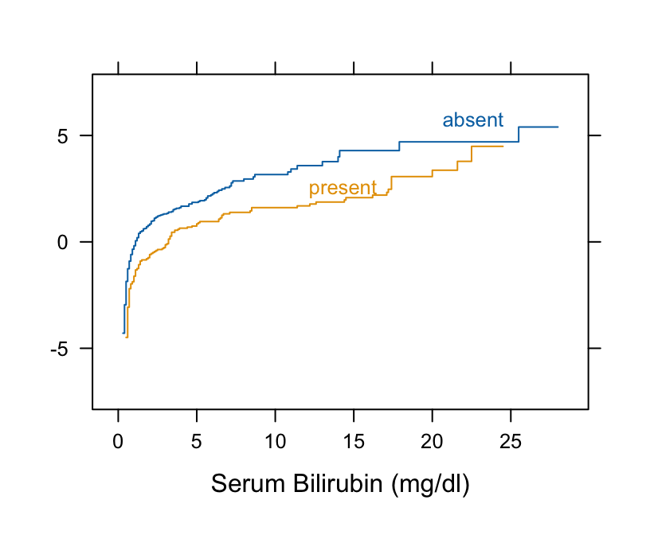
Ecdf(~ bili, group=spiders, data=pbc, fun=qnorm)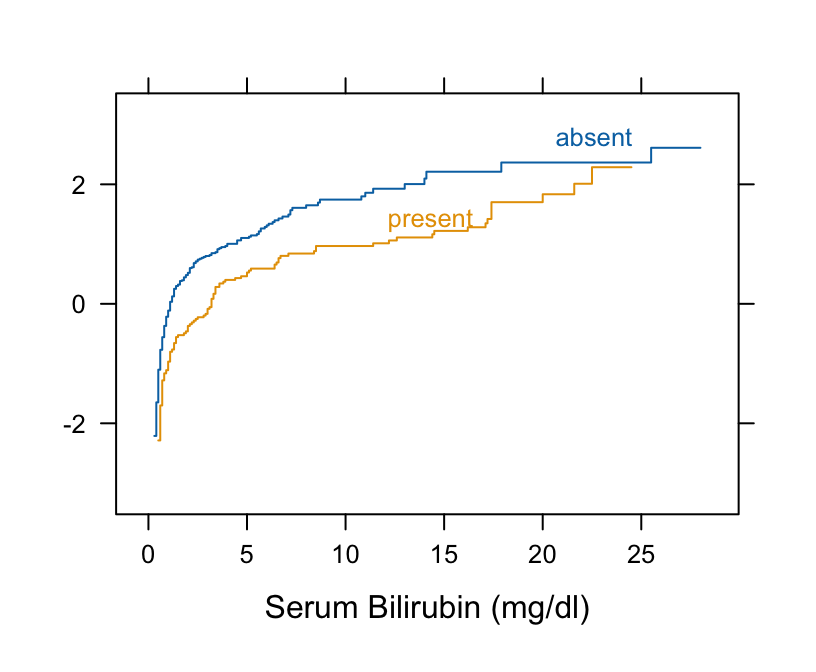
d <- csv.get(textConnection('
id sex surface y
1 female UN 1255
2 female UN 542
3 female UN 818
1 female UN 274
2 female UN 261
3 female UN 314
1 female UP 552
2 female UP 548
3 female UP 721
1 female UP 431
2 female UP 354
3 female UP 738
4 male UN 901
5 male UN 619
6 male UN 861
7 male UN 713
8 male UN 717
4 male UN 275
5 male UN 300
6 male UN 244
7 male UN 281
8 male UN 231
4 male UP 532
5 male UP 451
6 male UP 482
7 male UP 374
8 male UP 424
4 male UP 193
5 male UP 118
6 male UP 207
7 male UP 208
8 male UP 252
'), sep='\t')
require(data.table)
setDT(d)\t is the tab character
data.frame into a data.table
v <- d[, ecdfSteps(y, extend=FALSE), by=.(sex, surface)]
ggplot(v, aes(x, qlogis(pmin(y, 0.99)), color=sex, linetype=surface)) +
geom_step() + xlab('y') + ylab('logit ECDF')ecdfSteps is in the Hmisc package; it computes coordinates of empirical cumulative distribution functions; data.table uses by= for stratification
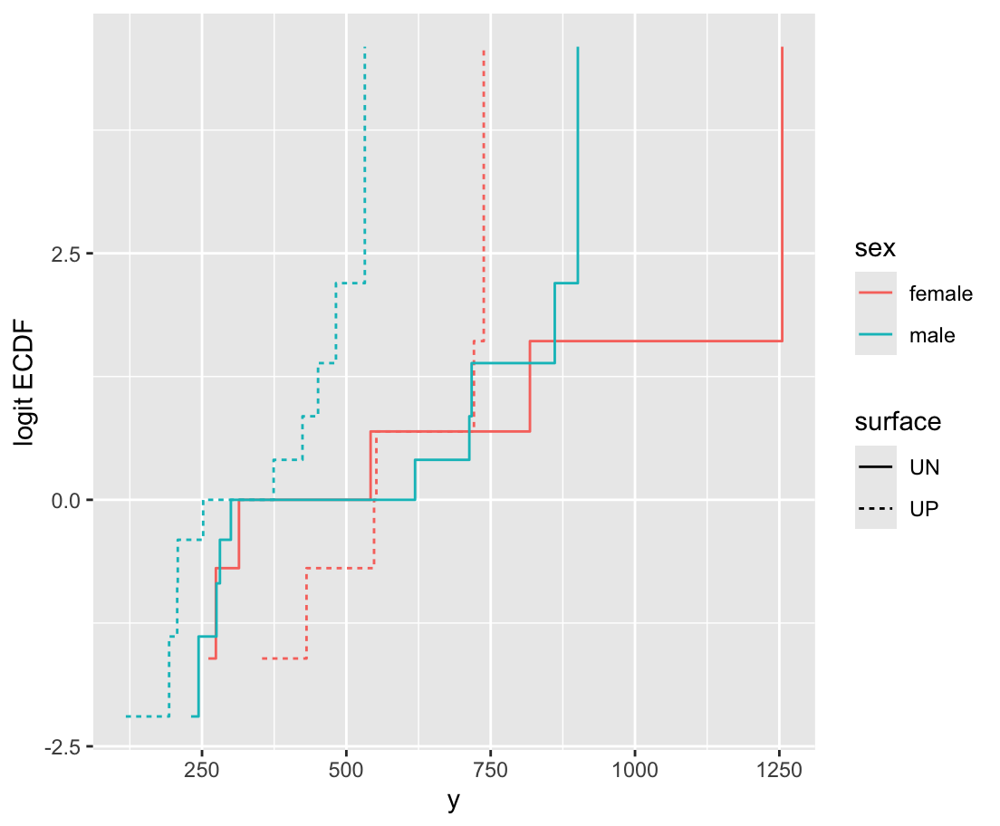
dd <- datadist(d); options(datadist='dd')
f <- orm(y ~ sex + surface, data=d, x=TRUE, y=TRUE)
print(f, intercepts=TRUE)
anova(f, test='LR')orm is the rms package’s function for analyzing continuous responses as ordinal. It also works for discrete Y but the rms lrm function is sometimes better for that. x=TRUE, y=TRUE is for getting likelihood ratio \(\chi^2\) tests.
Logistic (Proportional Odds) Ordinal Regression Model
orm(formula = y ~ sex + surface, data = d, x = TRUE, y = TRUE)
| Model Likelihood Ratio Test |
Discrimination Indexes |
Rank Discrim. Indexes |
|
|---|---|---|---|
| Obs32 | LR χ24.67 | R20.136 | ρ0.395 |
| ESS32 | d.f.2 | R22,320.080 | Dxy0.258 |
| Distinct Y32 | P(>χ2)0.0966 | R22,320.080 | |
| Y0.5427.5 | Score χ24.54 | |P(Y ≥ median)-½|0.137 | |
| max |∂log L/∂β|2×10-11 | P(>χ2)0.1036 |
| β | S.E. | Wald Z | P(>|Z|) | |
|---|---|---|---|---|
| y≥193 | 4.8126 | 1.2445 | 3.87 | 0.0001 |
| y≥207 | 4.0573 | 1.0130 | 4.01 | <0.0001 |
| y≥208 | 3.5856 | 0.9134 | 3.93 | <0.0001 |
| y≥231 | 3.2269 | 0.8502 | 3.80 | 0.0001 |
| y≥244 | 2.9369 | 0.8066 | 3.64 | 0.0003 |
| y≥252 | 2.6958 | 0.7774 | 3.47 | 0.0005 |
| y≥261 | 2.4797 | 0.7531 | 3.29 | 0.0010 |
| y≥274 | 2.2864 | 0.7327 | 3.12 | 0.0018 |
| y≥275 | 2.1194 | 0.7194 | 2.95 | 0.0032 |
| y≥281 | 1.9677 | 0.7101 | 2.77 | 0.0056 |
| y≥300 | 1.8238 | 0.7031 | 2.59 | 0.0095 |
| y≥314 | 1.6858 | 0.6981 | 2.41 | 0.0157 |
| y≥354 | 1.5559 | 0.6956 | 2.24 | 0.0253 |
| y≥374 | 1.4342 | 0.6955 | 2.06 | 0.0392 |
| y≥424 | 1.3127 | 0.6954 | 1.89 | 0.0591 |
| y≥431 | 1.1861 | 0.6937 | 1.71 | 0.0873 |
| y≥451 | 1.0580 | 0.6920 | 1.53 | 0.1263 |
| y≥482 | 0.9273 | 0.6902 | 1.34 | 0.1791 |
| y≥532 | 0.7877 | 0.6863 | 1.15 | 0.2511 |
| y≥542 | 0.6365 | 0.6795 | 0.94 | 0.3489 |
| y≥548 | 0.4821 | 0.6742 | 0.71 | 0.4746 |
| y≥552 | 0.3286 | 0.6732 | 0.49 | 0.6255 |
| y≥619 | 0.1697 | 0.6743 | 0.25 | 0.8013 |
| y≥713 | 0.0003 | 0.6775 | 0.00 | 0.9996 |
| y≥717 | -0.1863 | 0.6830 | -0.27 | 0.7850 |
| y≥721 | -0.3969 | 0.6917 | -0.57 | 0.5661 |
| y≥738 | -0.6380 | 0.7055 | -0.90 | 0.3658 |
| y≥818 | -0.9211 | 0.7283 | -1.26 | 0.2060 |
| y≥861 | -1.2581 | 0.7754 | -1.62 | 0.1047 |
| y≥901 | -1.7012 | 0.8727 | -1.95 | 0.0512 |
| y≥1255 | -2.4509 | 1.1155 | -2.20 | 0.0280 |
| sex=male | -1.2211 | 0.6677 | -1.83 | 0.0674 |
| surface=UP | -0.7824 | 0.6446 | -1.21 | 0.2249 |
Likelihood Ratio Statistics for y
| χ2 | d.f. | P | |
|---|---|---|---|
| sex | 3.47 | 1 | 0.0625 |
| surface | 1.50 | 1 | 0.2210 |
| TOTAL | 4.67 | 2 | 0.0966 |
yM <- Mean(f)
qu <- Quantile(f)
med <- function(lp) qu(0.5, lp)
g <- function(x) list(Mean=mean(x), Median=median(x))
cat('Sample estimates\n')
d[, g(y), by=.(sex, surface)]
cat('\nModel estimates of means (yhat)\n')
Predict(f, surface, sex=.q(female, male), fun=M)
cat('\nModel estimates of medians (yhat)\n')
Predict(f, surface, sex=.q(female, male), fun=med)fun=... causes predicted log odds to be transformed by the named function; .q is an R Hmisc package function that quotes strings for you
Sample estimates
sex surface Mean Median
<char> <char> <num> <num>
1: female UN 577.3333 428.0
2: female UP 557.3333 550.0
3: male UN 514.2000 459.5
4: male UP 324.1000 313.0
Model estimates of means (yhat)
surface sex yhat lower upper
1 UN female 640.6769 443.1609 838.1930
2 UP female 523.7141 365.5194 681.9088
3 UN male 463.0476 324.4904 601.6048
4 UP male 368.6684 259.6604 477.6763
Response variable (y):
Limits are 0.95 confidence limits
Model estimates of medians (yhat)
surface sex yhat lower upper
1 UN female 669.7487 384.5832 856.3839
2 UP female 508.5185 279.8697 718.9219
3 UN male 419.3042 264.8156 613.7942
4 UP male 277.0920 227.9898 463.4451
Response variable (y):
Limits are 0.95 confidence limitsJust as a binary logistic model may be used to do the McNemar test for paired binary data, regression can be used for testing for effects in paired ordinal or continuous data. Regression is more general:
Can adjust for covariates
Can have more than 2 (pre, post) periods, e.g., handles a multi-period crossover study
Paired \(t\)-test is equivalent to
Rank difference test is similar to
Let’s illustrate this by re-analyzing paired data analyzed previously.
w <- t.test(drug1, drug2, paired=TRUE)
w
Paired t-test
data: drug1 and drug2
t = -4.0621, df = 9, p-value = 0.002833
alternative hypothesis: true mean difference is not equal to 0
95 percent confidence interval:
-2.4598858 -0.7001142
sample estimates:
mean difference
-1.58 w$stderr # fetch standard error of mean difference[1] 0.3889587y <- c(drug1, drug2)
drug <- rep(c('A', 'B'), each=length(drug1))
id <- factor(rep(1 : length(drug1), 2))
d <- data.frame(drug, y, id)
dd <- datadist(d); options(datadist='dd')
ols(y ~ drug + id)Linear Regression Model
ols(formula = y ~ drug + id)
| Model Likelihood Ratio Test |
Discrimination Indexes |
|
|---|---|---|
| Obs20 | LR χ248.61 | R20.912 |
| σ0.8697 | d.f.10 | R2adj0.814 |
| d.f.9 | P(>χ2)0.0000 | g2.248 |
Residuals
Min 1Q Median 3Q Max -1.510e+00 -2.150e-01 -6.939e-18 2.150e-01 1.510e+00
| β | S.E. | t | P(>|t|) | |
|---|---|---|---|---|
| Intercept | 0.5100 | 0.6450 | 0.79 | 0.4495 |
| drug=B | 1.5800 | 0.3890 | 4.06 | 0.0028 |
| id=2 | -1.7000 | 0.8697 | -1.95 | 0.0824 |
| id=3 | -0.8500 | 0.8697 | -0.98 | 0.3540 |
| id=4 | -1.8500 | 0.8697 | -2.13 | 0.0623 |
| id=5 | -1.4000 | 0.8697 | -1.61 | 0.1419 |
| id=6 | 2.6000 | 0.8697 | 2.99 | 0.0152 |
| id=7 | 3.3000 | 0.8697 | 3.79 | 0.0043 |
| id=8 | -0.1000 | 0.8697 | -0.11 | 0.9110 |
| id=9 | 1.0000 | 0.8697 | 1.15 | 0.2799 |
| id=10 | 1.4000 | 0.8697 | 1.61 | 0.1419 |
require(nlme)
summary(lme(y ~ drug, random = ~ 1 | id, data=d))Linear mixed-effects model fit by REML
Data: d
AIC BIC logLik
77.95588 81.51737 -34.97794
Random effects:
Formula: ~1 | id
(Intercept) Residual
StdDev: 1.6877 0.8697384
Fixed effects: y ~ drug
Value Std.Error DF t-value p-value
(Intercept) 0.75 0.6003979 9 1.249172 0.2431
drugB 1.58 0.3889588 9 4.062127 0.0028
Correlation:
(Intr)
drugB -0.324
Standardized Within-Group Residuals:
Min Q1 Med Q3 Max
-1.63372282 -0.34157076 0.03346151 0.31510644 1.83858572
Number of Observations: 20
Number of Groups: 10 f <- ols(y ~ drug, x=TRUE, y=TRUE)
robcov(f, id)x=TRUE, y=TRUE needed for robcov, which is in the rms package
Linear Regression Model
ols(formula = y ~ drug, x = TRUE, y = TRUE)
| Model Likelihood Ratio Test |
Discrimination Indexes |
|
|---|---|---|
| Obs20 | LR χ23.52 | R20.161 |
| σ1.8986 | d.f.1 | R2adj0.115 |
| d.f.18 | P(>χ2)0.0607 | g0.832 |
Cluster onid |
||
| Clusters10 |
Residuals
Min 1Q Median 3Q Max -2.430 -1.305 -0.580 1.455 3.170
| β | S.E. | t | P(>|t|) | |
|---|---|---|---|---|
| Intercept | 0.7500 | 0.5367 | 1.40 | 0.1793 |
| drug=B | 1.5800 | 0.3690 | 4.28 | 0.0004 |
Standard error is a bit too small
P-value is too small because the sandwich estimator leads to a \(z\)-statistic and we should probably be using a \(t\)-statistic with the usual d.f.
Now compare rank difference test with PO model
f <- orm(y ~ drug + id, x=TRUE, y=TRUE)
anova(f, test='LR')Likelihood Ratio Statistics for y
| χ2 | d.f. | P | |
|---|---|---|---|
| drug | 22.33 | 1 | <0.0001 |
| id | 42.46 | 9 | <0.0001 |
| TOTAL | 46.27 | 10 | <0.0001 |
f <- orm(y ~ drug + cluster(id), data=d)
fLogistic (Proportional Odds) Ordinal Regression Model
orm(formula = y ~ drug + cluster(id), data = d)
Frequencies of Responses
-1.6 -1.2 -0.2 -0.1 0 0.1 0.7 0.8 1.1 1.6 1.9 2 3.4 3.7 4.4 4.6 1 1 1 2 1 1 1 2 1 1 1 1 2 1 1 1 5.5 1
| Model Likelihood Ratio Test |
Discrimination Indexes |
Rank Discrim. Indexes |
|
|---|---|---|---|
| Obs20 | LR χ210.25 | R20.403 | ρ0.425 |
| ESS19.9 | d.f.1 | R21,200.370 | Dxy0.262 |
| Distinct Y17 | P(>χ2)0.0014 | R21,19.90.372 | |
Cluster onid |
|P(Y ≥ median)-½|0.269 | ||
| Clusters10 | |||
| σγ3.125 [1.3705, 7.1253] | |||
| Y0.50.95 | |||
| max |∂log L/∂β|7×10-5 |
| β | S.E. | Wald Z | P(>|Z|) | |
|---|---|---|---|---|
| drug=B | 3.4097 | 1.2096 | 2.82 | 0.0048 |
f <- blrm(y ~ drug + cluster(id), data=d)Running MCMC with 4 chains, at most 9 in parallel...
Chain 1 finished in 0.2 seconds.
Chain 2 finished in 0.2 seconds.
Chain 3 finished in 0.2 seconds.
Chain 4 finished in 0.2 seconds.
All 4 chains finished successfully.
Mean chain execution time: 0.2 seconds.
Total execution time: 0.4 seconds.fBayesian Proportional Odds Ordinal Logistic Model
Dirichlet Priors With Concentration Parameter 0.148 for Intercepts
blrm(formula = y ~ drug + cluster(id), data = d)
Frequencies of Responses
-1.6 -1.2 -0.2 -0.1 0 0.1 0.7 0.8 1.1 1.6 1.9 2 3.4 3.7 4.4 4.6 1 1 1 2 1 1 1 2 1 1 1 1 2 1 1 1 5.5 1
| Mixed Calibration/ Discrimination Indexes |
Discrimination Indexes |
Rank Discrim. Indexes |
|
|---|---|---|---|
| Obs20 | LOO log L-74.06±3.86 | g1.571 [0.445, 2.783] | C0.751 [0.753, 0.753] |
| Draws4000 | LOO IC148.11±7.73 | gp0.015 [0, 0.058] | Dxy0.503 [0.505, 0.505] |
| Chains4 | Effective p33.23±2.57 | EV0.013 [0, 0.049] | |
| Time0.7s | B0.048 [0.045, 0.05] | v2.667 [0.001, 6.472] | |
| p1 | vp0.001 [0, 0.003] | ||
Cluster onid |
|||
| Clusters10 | |||
| σγ2.2413 [0.3594, 4.2682] |
| Mean β | Median β | S.E. | Lower | Upper | P(β>0) | Symmetry | |
|---|---|---|---|---|---|---|---|
| drug=B | 2.9207 | 2.8320 | 1.1041 | 0.9770 | 5.3064 | 0.9990 | 1.24 |
draws <- f$draws[, 'drug=B']
beta <- mean(draws)
se <- sd(draws)
z <- beta / se
p <- 2 * (1 - pnorm(abs(z)))
P <- mean(draws > 0)
round(c(beta=beta, se=se, z=z, p=p, 'Pr(beta > 0)'=P), 3) beta se z p Pr(beta > 0)
2.921 1.104 2.645 0.008 0.999 f <- orm(y ~ drug, x=TRUE, y=TRUE)
ff=robcov(f, id)for(n in c(10, 100, 1000, 10000, 100000, 1000000)) {
ranks <- 1 : n
zranks <- qnorm(ranks / (n + 1))
cat('n:', n, ' r2:', cor(ranks, zranks)^2, '\n')
}n: 10 r2: 0.9923288
n: 100 r2: 0.9688625
n: 1000 r2: 0.958053
n: 10000 r2: 0.9554628
n: 1e+05 r2: 0.955008
n: 1e+06 r2: 0.9549402 cat('3/pi: ', 3 / pi, '\n')3/pi: 0.9549297 R Hmisc package popower and posamsize functionsp <- c(.3, rep(.1, 7))
popower(p, 1.25, 1000) # compute power to detect OR=1.25, combined N=1000Power: 0.516
Efficiency of design compared with continuous response: 0.966
Approximate standard error of log odds ratio: 0.1116 posamsize(p, 1.25, power=0.9) # N for power=0.9Total sample size: 2621.4
Efficiency of design compared with continuous response: 0.966 pomodm(p=p, odds.ratio=1.25)[1] 0.25531915 0.09250694 0.09661836 0.10101010 0.10570825 0.11074197 0.11614402
[8] 0.12195122x <- c(0, 2 ^ (0:6))
sum(p * x) # check mean with OR=1[1] 12.7ors <- c(1, 1.05, 1.1, 1.2, 1.25, 1.5, 2)
w <- matrix(NA, nrow=length(ors), ncol=2,
dimnames=list(OR=ors, c('mean', 'median')))
i <- 0
for(or in ors) {
i <- i + 1
w[i, ] <- pomodm(x, p, odds.ratio=or)
}
w
OR mean median
1 12.70000 3.000000
1.05 13.14602 3.364286
1.1 13.58143 3.709091
1.2 14.42238 4.350000
1.25 14.82881 4.650000
1.5 16.73559 6.000000
2 20.03640 9.900000require(pwr)
pwr.t.test(d=3 / 10, n=150, sig.level=0.05, type='two.sample')
Two-sample t test power calculation
n = 150
d = 0.3
sig.level = 0.05
power = 0.7355674
alternative = two.sided
NOTE: n is number in *each* groups <- 1000 # number of simulated trials
pval <- numeric(s)
set.seed(1) # so can reproduce results
for(i in 1 : s) {
y1 <- rnorm(150, 100, 10)
y2 <- rnorm(150, 103, 10)
w <- wilcox.test(y1, y2)
pval[i] <- w$p.value
}
mean(pval < 0.05) # proportion of simulations with p < 0.05[1] 0.713# Simulate the power by actually running the prop. odds model 300 times
g <- function() simRegOrd(300, nsim=400, delta=3, sigma=10)$power # slower
as.vector(runifChanged(g)) # runifChanged is in Hmisc[1] 0.71# Use an arbitrary large sample to mimic population computations
m <- 200000
y1 <- sort(rnorm(m, 100, 10))
ors <- means <- seq(1, 4, by=.025)
i <- 0
for(or in ors) {
i <- i + 1
means[i] <- pomodm(y1, rep(1/m, m), odds.ratio=or)['mean']
}
needed.or <- approx(means, ors, xout=103)$y
needed.or[1] 1.706672ggplot(mapping=aes(ors, means)) + geom_line() +
geom_hline(yintercept=103, alpha=I(0.25)) +
geom_vline(xintercept=needed.or, alpha=I(0.25)) +
xlab('Group B:A Odds Ratio') +
ylab('Mean in Population B')
# Compute power at that odds ratio assuming no ties in data
popower(rep(1/300, 300), odds.ratio=needed.or, n=300)Power: 0.759
Efficiency of design compared with continuous response: 1
Approximate standard error of log odds ratio: 0.2007 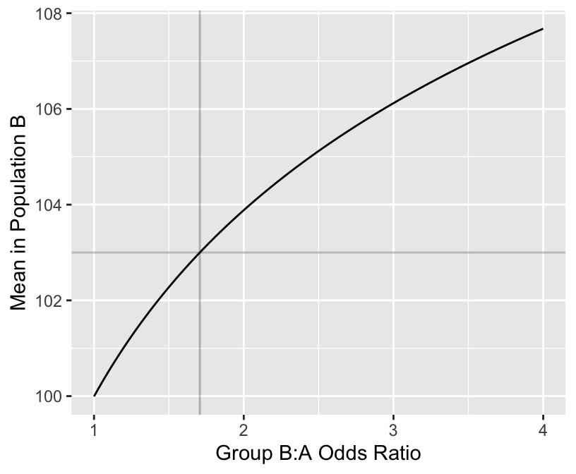
# First do this theoretically
# Control arm has Gaussian Y with mean 100, SD 10
# Create experimental arm distribution using OR=10
y <- seq(60, 145, length=150)
Fy <- 1 - pnorm(y, mean=100, sd=10) # P(Y >= y | group A)
Gy <- 1 - plogis(qlogis(Fy) + log(10)) # P(Y >= y | group B)
qu <- approx(Gy, y, xout=c(0.25, 0.5, 0.75))$y
qu # Q1, median, Q2[1] 107.3628 113.3506 118.4894s <- (qu[3] - qu[1]) / (qnorm(0.75) - qnorm(0.25))
mu <- qu[1] - s * qnorm(0.25)
ncdf <- pnorm(y, mean=mu, sd=s)
d <- rbind(data.frame(Distribution='logistic', x=y, y=Gy),
data.frame(Distribution='normal', x=y, y=ncdf))
ggplot(d, aes(x, y, col=Distribution)) + geom_line() +
xlab(expression(y)) + ylab(expression(P(Y <= y)))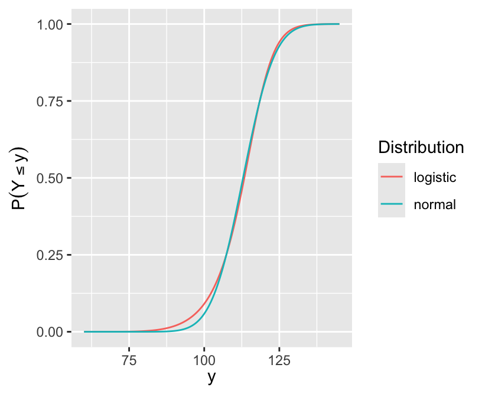
ggplot(mapping=aes(x=y, y=qnorm(Gy))) + geom_line() +
geom_smooth(method=lm, se=FALSE, col=I('blue')) +
xlab(expression(y))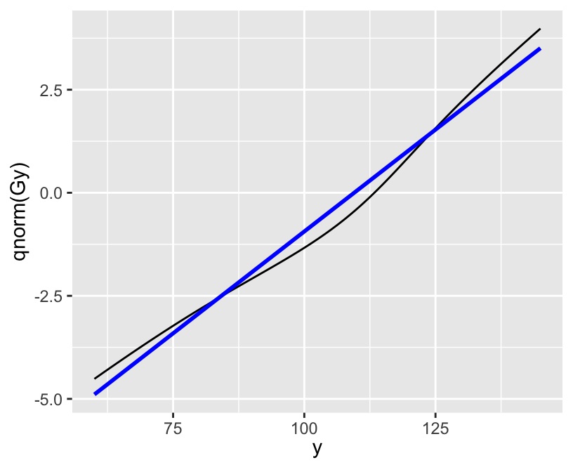
p <- pomodm(p=rep(1/m, m), odds.ratio=10)
range(p) # control arm: all 1/200000[1] 5.000023e-07 4.999773e-05wtd.mean(y1, p) # mean shifted by about 12 units[1] 112.4071# Form new distribution by repeating each observation a number
# of times equal to the ratio of the new probability to the
# minimum of all new probabilities
y2 <- rep(y1, round(p / min(p))) # 2M obs instead of 200K
mean(y2)[1] 112.4658quantile(y2, c(.25, .5, .75)) 25% 50% 75%
107.4406 113.3427 118.4725 # The following plot is similar to the previous one
ncdf <- pnorm(y, mean=mean(y2), sd=sd(y2))
ggplot(mapping=aes(x=y2)) + stat_ecdf(geom='step') +
geom_line(mapping=aes(x=y, y=ncdf, col=I('blue'))) +
xlab(expression(y)) + ylab(expression(Proportion <= x))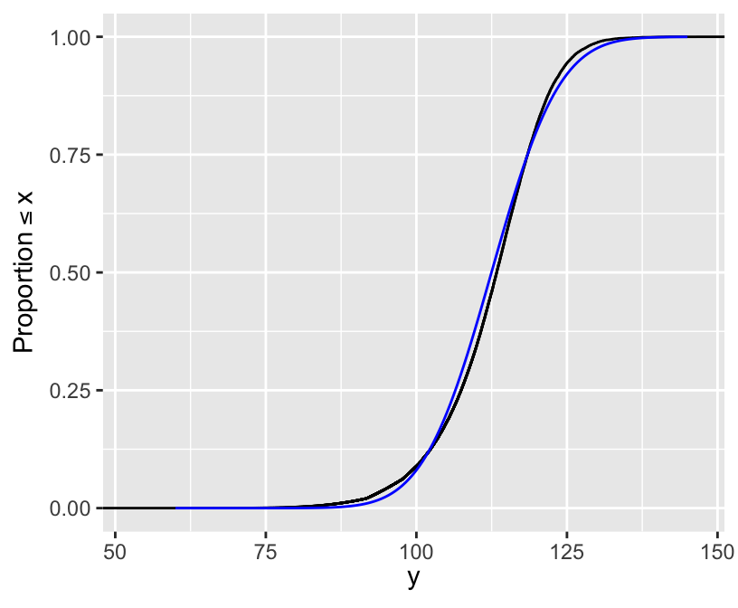
s <- 1000 # number of simulated trials
pvalt <- pvalw <- numeric(s)
set.seed(1) # so can reproduce results
for(delta in c(0, 0.3)) {
for(i in 1 : s) {
y1 <- rt(150, 4)
y2 <- rt(150, 4) + delta
pvalt[i] <- t.test(y1, y2)$p.value
pvalw[i] <- wilcox.test(y1, y2)$p.value
}
cat('Delta:', delta, '\n')
P <- function(x) round(mean(x), 2)
cat('Proportion of simulations with W p-value < t p-value:',
P(pvalw < pvalt), '\n')
cat('Mean p-value for t:', P(pvalt), '\n')
cat('Mean p-value for W:', P(pvalw), '\n')
cat('Power for t:', P(pvalt < 0.05), '\n')
cat('Power for W:', P(pvalw < 0.05), '\n\n')
}Delta: 0
Proportion of simulations with W p-value < t p-value: 0.51
Mean p-value for t: 0.5
Mean p-value for W: 0.49
Power for t: 0.05
Power for W: 0.06
Delta: 0.3
Proportion of simulations with W p-value < t p-value: 0.73
Mean p-value for t: 0.17
Mean p-value for W: 0.12
Power for t: 0.47
Power for W: 0.6 Hmisc simRegOrd function can also simulate power for an adjusted two-sample comparison if there is one adjustment covariateblrm function in the R rmsb package is devoted to the PO and partial PO modelR brms package: bit.ly/brms-ordinal and this discussion:10 One merely takes each posterior sample for the \(\alpha\)s and \(\beta\)s and computes the quantity of interest, thereby automatically generating posterior samples for the derived quantity for which quantiles can compute credible intervals, etc.
The empirical cumulative distribution function (ECDF) was introduced in Section 4.3.3.2. It is a nonparametric estimator of the unknown CDF for a (primarily) continuous variable. Inverting the ECDF gives traditional sample quantile estimates, so if one wants to estimate all possible quantiles accurately one needs to estimate the ECDF accurately over its entire range.
Kolmogorov and Smirnov developed a nonparametric test for whether a sample comes from a specific parametric CDF, by computing the maximum absolute difference between the ECDF and the postulated CDF. This test can be inverted to obtain simultaneous confidence bands for the unknown CDF. The global margin of error for an ECDF is the Kolmogorov-Smirnov critical value, for a certain \(\alpha\).
Kjetil Halvorsen and Martin Maechler have an R function in their sfsmisc package that provides a fast approximation to the K-S critical values when \(\alpha=0.05\) (for 0.95 confidence bands). This function is reproduced below, and we use it to compute the 0.95-level simultaneous margins of error for the ECDF as a function of sample size.
This is a good opportunity to check the universal rule that the precision of an estimate is proportional to the square root of the sample size. The approxmoe function below multiplies the accurate margin of error at \(n=20\) by the square root of the ratio of 20 to the sample size of interest.
KSd <- function(n)
{
## `approx.ksD()'
## approximations for the critical level for Kolmogorov-Smirnov statistic D,
## for confidence level 0.95. Taken from Bickel & Doksum, table IX, p.483
## and Lienert G.A.(1975) who attributes to Miller,L.H.(1956), JASA
ifelse(n > 80,
1.358/( sqrt(n) + .12 + .11/sqrt(n)),## Bickel&Doksum, table IX,p.483
splinefun(c(1:9, 10, 15, 10 * 2:8),# from Lienert
c(.975, .84189, .70760, .62394, .56328,# 1:5
.51926, .48342, .45427, .43001, .40925,# 6:10
.33760, .29408, .24170, .21012,# 15,20,30,40
.18841, .17231, .15975, .14960)) (n))
}
plot(10 : 10000, KSd(10 : 10000), type='l', xlab='n',
ylab='ECDF Margin of Error')
abline(h=c(0.025, 0.05, 0.1), col=gray(0.6))
ns <- c(20, 50, 100, 180, 250, 500, 730, 750, 1000, 2935, 5000, 10000, 18400)
approxmoe <- function(n) 0.29408 * sqrt(20 / n)
data.frame(n=ns, MOE=round(KSd(ns), 3), MOEsqrt=round(approxmoe(ns), 3)) n MOE MOEsqrt
1 20 0.294 0.294
2 50 0.188 0.186
3 100 0.134 0.132
4 180 0.100 0.098
5 250 0.085 0.083
6 500 0.060 0.059
7 730 0.050 0.049
8 750 0.049 0.048
9 1000 0.043 0.042
10 2935 0.025 0.024
11 5000 0.019 0.019
12 10000 0.014 0.013
13 18400 0.010 0.010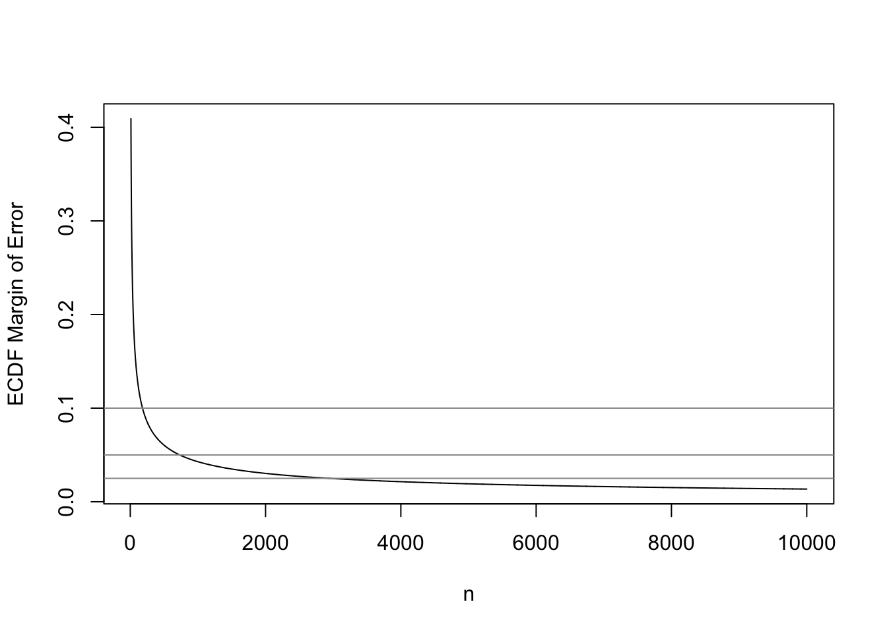
The sample size required to have a margin of error of \(\pm 0.01\) for the entire ECDF is 18,400. In other words if one desired to have a high degree of confidence that no estimated quantile will be off by more than a probability of 0.01, \(n=18,400\) will achieve this. For example, the sample 0.25 quantile (first quartile) may correspond to population quantiles 0.24-0.26. To achieve a \(\pm 0.1\) MOE requires \(n=180\), and to have \(\pm 0.05\) requires \(n=730\).
The “universal \(\sqrt{}\) rule” worked quite well. This will allow us to extend the calculations to any confidence level. The built-in R function qsmirnov allows us to compute exact critical values of the K-S test by computing the critical value of the Smirnov test when one of the two distributions it compares has an infinite sample size. Here \(n=10000\) is close enough to \(\infty\).
qsmirnov(0.95, c(20, 10000)) # took 11s[1] 0.2943706KSd(20)[1] 0.29408# Now use alpha=0.1 instead of 0.05
qsmirnov(0.9, c(20, 10000))[1] 0.2650735approxmoe90 <- function(n) 0.2652735 * sqrt(20 / n)
round(approxmoe90(c(20, 100, 1000)), 3)[1] 0.265 0.119 0.038